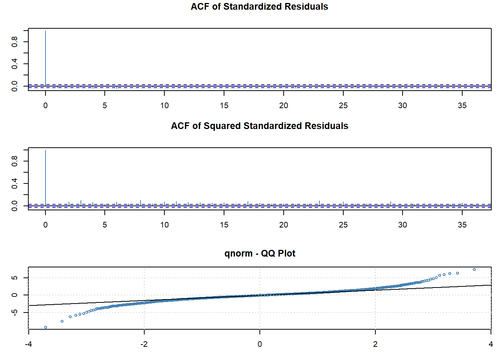
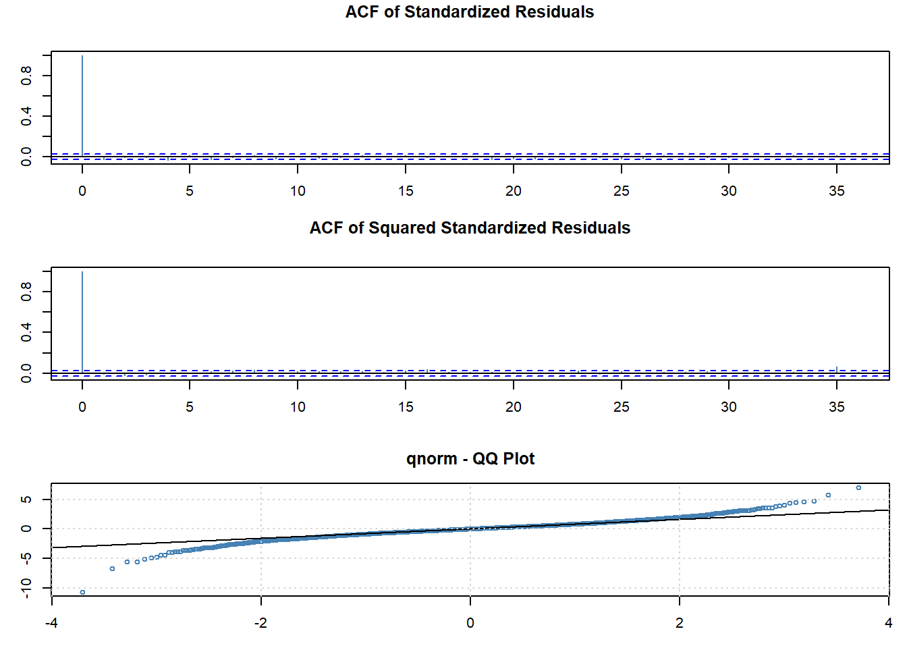
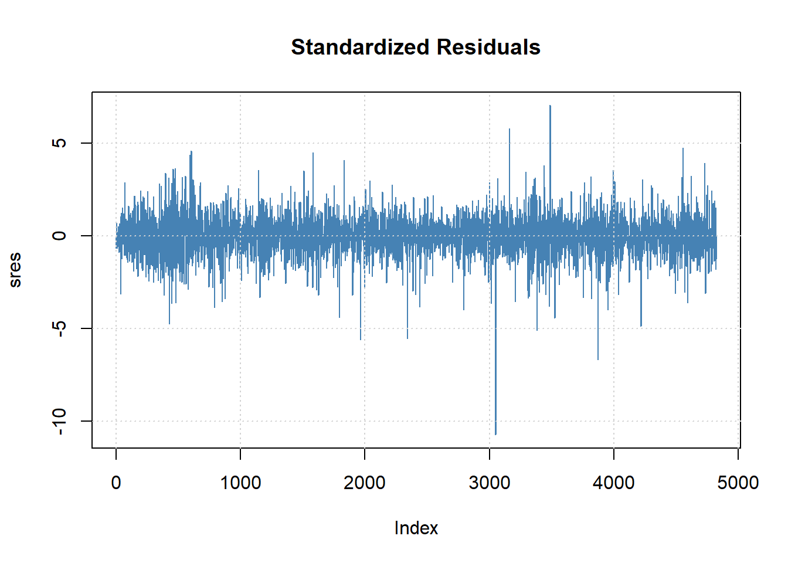

libraries
library(tidyverse) # tidy data ecosystem
library(patchwork) # patch ggplots
library(fGarch) # ARCH, GARCH modeling
library(fBasics) # basicStats()library(tidyverse) # tidy data ecosystem
library(patchwork) # patch ggplots
library(fGarch) # ARCH, GARCH modeling
library(fBasics) # basicStats()In this practice, we will work on fitting different volatility models (ARCH and GARCH). We will also focus on discussing the validation and selection of the model. As done in previous practices, each student group must follow the practice script below, performing the necessary calculations and graphs in the R environment. The obtained results and answers to the questions should be compiled into a document containing your solution, created, for example, in R Markdown or Microsoft Word. Please make sure to include your full names and group number at the beginning of the document. Submit the questionnaire solution in PDF format by uploading it to the platform under the corresponding task section before the deadline.
In this questionnaire, we will work with the following time series:
You can download the data using this code:
library(quantmod) # quant finc modeling and trading framework
getSymbols("KO")[1] "KO"Task: Download the time series. You may work with the complete dataset (from 2007 to the most recent trading session).
Solution
cat('column names:', names(KO), '\n\n') # columnscolumn names: KO.Open KO.High KO.Low KO.Close KO.Volume KO.Adjusted summary(KO) # quick summary stats Index KO.Open KO.High KO.Low
Min. :2007-01-03 Min. :19.08 Min. :19.61 Min. :18.72
1st Qu.:2011-10-13 1st Qu.:33.97 1st Qu.:34.21 1st Qu.:33.77
Median :2016-08-01 Median :42.82 Median :43.20 Median :42.53
Mean :2016-08-01 Mean :44.55 Mean :44.86 Mean :44.23
3rd Qu.:2021-05-17 3rd Qu.:54.60 3rd Qu.:54.91 3rd Qu.:54.26
Max. :2026-03-06 Max. :81.25 Max. :82.00 Max. :80.82
KO.Close KO.Volume KO.Adjusted
Min. :18.92 Min. : 2996300 Min. :11.18
1st Qu.:34.00 1st Qu.: 11417600 1st Qu.:21.87
Median :42.92 Median : 14403150 Median :31.81
Mean :44.55 Mean : 16210680 Mean :35.44
3rd Qu.:54.61 3rd Qu.: 18930075 3rd Qu.:47.46
Max. :81.56 Max. :124169000 Max. :81.56 chartSeries(KO) # financial chart
Task: Create a graphical representation of the time series using the Adjusted Closing Price.
Solution
plot(KO$KO.Adjusted,
main = "Coca-Cola Closing Stock Price ($USD), Adjusted")
Task: Compute the log-returns of the series. It is not necessary to model the mean (e.g., using an ARIMA model).
Solution
# returns: can do this directly using fQuant library
KO$log_returns <- dailyReturn(KO$KO.Adjusted,
type = "log")
# sanity check
head(KO$log_returns) log_returns
2007-01-03 0.0000000000
2007-01-04 0.0004118395
2007-01-05 -0.0070204906
2007-01-08 0.0064028431
2007-01-09 0.0008236089
2007-01-10 0.0014385829# plot
plot(KO$log_returns,
main = "Coca-Cola Closing Stock Price ($USD), Adjusted") # looks stationary -- good
Before moving on to model fitting, we do some basic analysis of the returns.
stats <- basicStats(KO$log_returns)
stats[c("Skewness", "Kurtosis"), , drop = FALSE] log_returns
Skewness -0.160949
Kurtosis 11.303083The time series is more skewed compared to the normal distribution, and it has fatter tails because of the excess kurtosis of around 11.
par(mfrow = c(1, 2))
acf(KO$log_returns^2, lwd = 2, lag.max = 50)
pacf(KO$log_returns^2, lwd = 2, lag.max = 50)
par(mfrow=c(1,1))Task: Using the fGarch package, fit the following models to the log-returns: an ARCH(1) model, an ARCH(3) model, and a GARCH(1,1) model.
Solution
# fit a arch(1) [~garch(1,0)] model
arch_1_md <- garchFit(formula = ~ garch(1, 0),
data = KO$log_returns,
trace = FALSE)
par(mar=c(3,3,3,1))
tsdiag(arch_1_md)
# fit a arch(3) [~garch(3,0)] model
arch_3_md <- garchFit(formula = ~ garch(3, 0),
data = KO$log_returns,
trace = FALSE)
par(mar=c(3,3,3,1))
tsdiag(arch_3_md)
ARCH(3) captures more of the volatility clustering than ARCH(1): the Ljung-Box p-values on the squared standardized residuals are generally higher at low lags, and fewer spikes in the ACF of squared residuals are statistically significant. However, adding three ARCH lags requires more parameters, so we need to check whether the improvement in fit justifies the added complexity relative to the simpler GARCH(1,1).
# fit a garch(1,1) model
garch_11_md <- garchFit(formula = ~ garch(1, 1),
data = KO$log_returns,
trace = FALSE)
par(mar=c(3,3,3,1))
tsdiag(garch_11_md)The GARCH(1,1) produces the cleanest diagnostics of the three: the lagged variance term \(\beta_1 \sigma_{t-1}^2\) efficiently captures the long-run memory in volatility that would otherwise require many ARCH lags. The Ljung-Box p-values on squared standardized residuals remain above 0.05 across lag orders, indicating no remaining ARCH effects with just two variance parameters.
Task: Write the expression of each fitted model.
Solution
Note that the ARCH(p) model takes the form:
\[ \text{Mean Equation } \\ X_t = \mu + Z_t \]
\[ \text{Variance Equation } \\ \sigma_t^2 = \alpha_0 + \alpha_1 Z_{t-1}^2 + \alpha_2 Z_{t-2}^2 ... \alpha_{p}Z_{t-p}^2 \]
With the random error \(Z_t\) being defined as:
\[ Z_t = \sqrt{\sigma_t^2} \varepsilon_t, \ \ \ \ \varepsilon_t \sim WN(0,1) \]
sum1 <- summary(arch_1_md)
Title:
GARCH Modelling
Call:
garchFit(formula = ~garch(1, 0), data = KO$log_returns, trace = FALSE)
Mean and Variance Equation:
data ~ garch(1, 0)
<environment: 0x00000215f052c270>
[data = KO$log_returns]
Conditional Distribution:
norm
Coefficient(s):
mu omega alpha1
6.1420e-04 9.0469e-05 3.4125e-01
Std. Errors:
based on Hessian
Error Analysis:
Estimate Std. Error t value Pr(>|t|)
mu 6.142e-04 1.444e-04 4.254 2.1e-05 ***
omega 9.047e-05 2.411e-06 37.521 < 2e-16 ***
alpha1 3.413e-01 2.596e-02 13.144 < 2e-16 ***
---
Signif. codes: 0 '***' 0.001 '**' 0.01 '*' 0.05 '.' 0.1 ' ' 1
Log Likelihood:
14958.15 normalized: 3.100777
Description:
Mon Mar 9 02:23:37 2026 by user: T14
Standardised Residuals Tests:
Statistic p-Value
Jarque-Bera Test R Chi^2 7946.5324144 0.00000000
Shapiro-Wilk Test R W 0.9440325 0.00000000
Ljung-Box Test R Q(10) 22.8620262 0.01126748
Ljung-Box Test R Q(15) 24.3539809 0.05932096
Ljung-Box Test R Q(20) 30.3427467 0.06448704
Ljung-Box Test R^2 Q(10) 230.8452386 0.00000000
Ljung-Box Test R^2 Q(15) 337.8881737 0.00000000
Ljung-Box Test R^2 Q(20) 408.1065534 0.00000000
LM Arch Test R TR^2 212.3372869 0.00000000
Information Criterion Statistics:
AIC BIC SIC HQIC
-6.200311 -6.196280 -6.200312 -6.198896 # estimates column
sum1$show$matcoef Estimate Std. Error t value Pr(>|t|)
mu 6.141958e-04 1.443931e-04 4.253637 2.103265e-05
omega 9.046893e-05 2.411151e-06 37.521059 0.000000e+00
alpha1 3.412518e-01 2.596204e-02 13.144261 0.000000e+00mu_estimate <- sum1$show$matcoef[1,1]
omega_estimate <- sum1$show$matcoef[2,1]
alpha1_estimate <- sum1$show$matcoef[3,1]Plugging in our estimates, we get a expression of our fitted ARCH(1) model taking the form:
\(X_t = 0.000614 + Z_t\)
\(\sigma_t^2 = 0.000090 + 0.341252 Z_{t-1}^2\)
sum2 <- summary(arch_3_md)
Title:
GARCH Modelling
Call:
garchFit(formula = ~garch(3, 0), data = KO$log_returns, trace = FALSE)
Mean and Variance Equation:
data ~ garch(3, 0)
<environment: 0x00000215eff34270>
[data = KO$log_returns]
Conditional Distribution:
norm
Coefficient(s):
mu omega alpha1 alpha2 alpha3
0.00054241 0.00006723 0.12950755 0.18704885 0.14708684
Std. Errors:
based on Hessian
Error Analysis:
Estimate Std. Error t value Pr(>|t|)
mu 5.424e-04 1.371e-04 3.957 7.59e-05 ***
omega 6.723e-05 2.319e-06 28.991 < 2e-16 ***
alpha1 1.295e-01 1.868e-02 6.933 4.13e-12 ***
alpha2 1.870e-01 2.232e-02 8.382 < 2e-16 ***
alpha3 1.471e-01 1.938e-02 7.590 3.20e-14 ***
---
Signif. codes: 0 '***' 0.001 '**' 0.01 '*' 0.05 '.' 0.1 ' ' 1
Log Likelihood:
15175.74 normalized: 3.145882
Description:
Mon Mar 9 02:23:40 2026 by user: T14
Standardised Residuals Tests:
Statistic p-Value
Jarque-Bera Test R Chi^2 6773.0331968 0.00000000
Shapiro-Wilk Test R W 0.9586277 0.00000000
Ljung-Box Test R Q(10) 18.3970330 0.04862434
Ljung-Box Test R Q(15) 21.4719049 0.12241720
Ljung-Box Test R Q(20) 26.7130970 0.14353047
Ljung-Box Test R^2 Q(10) 14.6744086 0.14439089
Ljung-Box Test R^2 Q(15) 25.3971973 0.04485684
Ljung-Box Test R^2 Q(20) 36.4097977 0.01376007
LM Arch Test R TR^2 19.6284202 0.07444964
Information Criterion Statistics:
AIC BIC SIC HQIC
-6.289692 -6.282974 -6.289694 -6.287333 sum2$show$matcoef Estimate Std. Error t value Pr(>|t|)
mu 5.424115e-04 1.370778e-04 3.956961 7.590926e-05
omega 6.722961e-05 2.318989e-06 28.990922 0.000000e+00
alpha1 1.295075e-01 1.868039e-02 6.932808 4.125589e-12
alpha2 1.870488e-01 2.231609e-02 8.381792 0.000000e+00
alpha3 1.470868e-01 1.937816e-02 7.590339 3.197442e-14mu_estimate <- sum2$show$matcoef[1,1]
omega_estimate <- sum2$show$matcoef[2,1]
alpha1_estimate <- sum2$show$matcoef[3,1]
alpha2_estimate <- sum2$show$matcoef[4,1]
alpha3_estimate <- sum2$show$matcoef[5,1]Plugging in our estimates, we get the fitted ARCH(3) model:
\(X_t = 0.00054 + Z_t\)
\(\sigma_t^2 = 0.00007 + 0.12951 Z_{t-1}^2 + 0.18705 Z_{t-2}^2 + 0.14709 Z_{t-3}^2\)
Note that for GARCH(p,q) models, they take the form:
\[ \text{Mean Equation } \\ X_t = \mu + Z_t \\ \]
\[ \text{Variance Equation } \\ \sigma_t^2 = \alpha_0 + \alpha_1 Z_{t-1}^2 + \alpha_2 Z_{t-2}^2 + \dots + \alpha_{p}Z_{t-p}^2 + \beta_1 \sigma_{t-1}^2 + \beta_2 \sigma_{t-2}^2 + \dots + \beta_q \sigma_{t-q}^2 \]
sum3<- summary(garch_11_md)
Title:
GARCH Modelling
Call:
garchFit(formula = ~garch(1, 1), data = KO$log_returns, trace = FALSE)
Mean and Variance Equation:
data ~ garch(1, 1)
<environment: 0x00000215e1b20b68>
[data = KO$log_returns]
Conditional Distribution:
norm
Coefficient(s):
mu omega alpha1 beta1
4.9355e-04 3.1742e-06 6.6709e-02 9.0752e-01
Std. Errors:
based on Hessian
Error Analysis:
Estimate Std. Error t value Pr(>|t|)
mu 4.935e-04 1.355e-04 3.642 0.000271 ***
omega 3.174e-06 6.618e-07 4.796 1.62e-06 ***
alpha1 6.671e-02 7.844e-03 8.505 < 2e-16 ***
beta1 9.075e-01 1.189e-02 76.335 < 2e-16 ***
---
Signif. codes: 0 '***' 0.001 '**' 0.01 '*' 0.05 '.' 0.1 ' ' 1
Log Likelihood:
15265.26 normalized: 3.16444
Description:
Mon Mar 9 02:23:43 2026 by user: T14
Standardised Residuals Tests:
Statistic p-Value
Jarque-Bera Test R Chi^2 6400.4760213 0.00000000
Shapiro-Wilk Test R W 0.9603188 0.00000000
Ljung-Box Test R Q(10) 17.9132106 0.05644542
Ljung-Box Test R Q(15) 19.5902185 0.18822215
Ljung-Box Test R Q(20) 23.8659332 0.24829756
Ljung-Box Test R^2 Q(10) 3.9874932 0.94790942
Ljung-Box Test R^2 Q(15) 4.5235653 0.99544941
Ljung-Box Test R^2 Q(20) 5.9771460 0.99892802
LM Arch Test R TR^2 4.1182117 0.98120751
Information Criterion Statistics:
AIC BIC SIC HQIC
-6.327221 -6.321847 -6.327222 -6.325334 sum3$show$matcoef Estimate Std. Error t value Pr(>|t|)
mu 4.935482e-04 1.355299e-04 3.641618 2.709304e-04
omega 3.174218e-06 6.618079e-07 4.796282 1.616375e-06
alpha1 6.670949e-02 7.843691e-03 8.504859 0.000000e+00
beta1 9.075182e-01 1.188865e-02 76.334836 0.000000e+00mu_estimate <- sum3$show$matcoef[1,1]
omega_estimate <- sum3$show$matcoef[2,1]
alpha1_estimate <- sum3$show$matcoef[3,1]
beta1_estimate <- sum3$show$matcoef[4,1]Plugging in our estimates, we get the fitted GARCH(1,1) model:
\(X_t = 0.00049 + Z_t\)
\(\sigma_t^2 = 0.00000 + 0.06671 Z_{t-1}^2 + 0.90752 \sigma_{t-1}^2\)
Task: Analyze the diagnostic results and determine which of the three models provides the best fit
Solution
To decide which of the three models gives the best fit, we will compare information criteria (AIC/BIC), significance of coefficients, and robustness checks using Ljung-Box, Shapiro-Wilk, and Jarque-Bera tests.
Models = c('ARCH(1)', 'ARCH(3)', 'GARCH(1,1)')
df_results <- rbind(sum1$ics,
sum2$ics,
sum3$ics)
df_results <- as.data.frame(df_results)
rownames(df_results) <- Models
df_results # table of results AIC BIC SIC HQIC
ARCH(1) -6.200311 -6.196280 -6.200312 -6.198896
ARCH(3) -6.289692 -6.282974 -6.289694 -6.287333
GARCH(1,1) -6.327221 -6.321847 -6.327222 -6.325334It is important we only compare models using the same IC for each other; thus, we will consider all three model’s AIC scores, and then all of their BIC scores:
# aic
df_results %>%
select(AIC) %>%
arrange(AIC) AIC
GARCH(1,1) -6.327221
ARCH(3) -6.289692
ARCH(1) -6.200311# bic
df_results %>%
select(BIC) %>%
arrange(BIC) BIC
GARCH(1,1) -6.321847
ARCH(3) -6.282974
ARCH(1) -6.196280For both information criteria, the GARCH(1,1) has the lowest score, which is preferred as it indicates the best balance of fit and parsimony.
# ARCH(1)
sum1$show$matcoef Estimate Std. Error t value Pr(>|t|)
mu 6.141958e-04 1.443931e-04 4.253637 2.103265e-05
omega 9.046893e-05 2.411151e-06 37.521059 0.000000e+00
alpha1 3.412518e-01 2.596204e-02 13.144261 0.000000e+00# ARCH(3)
sum2$show$matcoef Estimate Std. Error t value Pr(>|t|)
mu 5.424115e-04 1.370778e-04 3.956961 7.590926e-05
omega 6.722961e-05 2.318989e-06 28.990922 0.000000e+00
alpha1 1.295075e-01 1.868039e-02 6.932808 4.125589e-12
alpha2 1.870488e-01 2.231609e-02 8.381792 0.000000e+00
alpha3 1.470868e-01 1.937816e-02 7.590339 3.197442e-14# GARCH(1,1)
sum3$show$matcoef Estimate Std. Error t value Pr(>|t|)
mu 4.935482e-04 1.355299e-04 3.641618 2.709304e-04
omega 3.174218e-06 6.618079e-07 4.796282 1.616375e-06
alpha1 6.670949e-02 7.843691e-03 8.504859 0.000000e+00
beta1 9.075182e-01 1.188865e-02 76.334836 0.000000e+00All three models have fully significant coefficients: each estimate is at least twice its standard error (\(|\hat{t}| > 1.96\)). This confirms that every lag included is contributing meaningfully to explaining the volatility dynamics.
The Ljung-Box test checks whether the standardized residuals and their squares exhibit any remaining serial correlation. Rows [3:5] report the test on \(\hat{\epsilon}_t\) (should show no mean dynamics remaining) and rows [6:8] on \(\hat{\epsilon}_t^2\) (should show no remaining ARCH effects).
# ARCH(1)
sum1$stat_tests[3:5,] Statistic p-Value
Ljung-Box Test R Q(10) 22.86203 0.01126748
Ljung-Box Test R Q(15) 24.35398 0.05932096
Ljung-Box Test R Q(20) 30.34275 0.06448704sum1$stat_tests[6:8,] Statistic p-Value
Ljung-Box Test R^2 Q(10) 230.8452 0
Ljung-Box Test R^2 Q(15) 337.8882 0
Ljung-Box Test R^2 Q(20) 408.1066 0# ARCH(3)
sum2$stat_tests[3:5,] Statistic p-Value
Ljung-Box Test R Q(10) 18.39703 0.04862434
Ljung-Box Test R Q(15) 21.47190 0.12241720
Ljung-Box Test R Q(20) 26.71310 0.14353047sum2$stat_tests[6:8,] Statistic p-Value
Ljung-Box Test R^2 Q(10) 14.67441 0.14439089
Ljung-Box Test R^2 Q(15) 25.39720 0.04485684
Ljung-Box Test R^2 Q(20) 36.40980 0.01376007# GARCH(1,1)
sum3$stat_tests[3:5,] Statistic p-Value
Ljung-Box Test R Q(10) 17.91321 0.05644542
Ljung-Box Test R Q(15) 19.59022 0.18822215
Ljung-Box Test R Q(20) 23.86593 0.24829756sum3$stat_tests[6:8,] Statistic p-Value
Ljung-Box Test R^2 Q(10) 3.987493 0.9479094
Ljung-Box Test R^2 Q(15) 4.523565 0.9954494
Ljung-Box Test R^2 Q(20) 5.977146 0.9989280All three models clear the test on the levels of the standardized residuals, confirming the mean equation is adequate. For the squared standardized residuals, GARCH(1,1) tends to produce the highest p-values across lag orders, indicating it has done the best job eliminating remaining ARCH effects with the fewest parameters.
plot(arch_3_md, which = 9)
The QQ-plot of standardized residuals shows deviation in the tails relative to the normal distribution, consistent with the excess kurtosis of roughly 11 noted in the summary statistics. This suggests a Student-t innovation distribution may fit KO returns better than the default normal.
# ARCH(1)
sum1$stat_tests[1:2,] Statistic p-Value
Jarque-Bera Test R Chi^2 7946.5324144 0
Shapiro-Wilk Test R W 0.9440325 0# ARCH(3)
sum2$stat_tests[1:2,] Statistic p-Value
Jarque-Bera Test R Chi^2 6773.0331968 0
Shapiro-Wilk Test R W 0.9586277 0# GARCH(1,1)
sum3$stat_tests[1:2,] Statistic p-Value
Jarque-Bera Test R Chi^2 6400.4760213 0
Shapiro-Wilk Test R W 0.9603188 0The LM ARCH test has \(H_0\): no ARCH effects (all \(\alpha_i = 0\) in the auxiliary regression of \(\hat{\epsilon}_t^2\) on its own lags). The test statistic is \(LM = T \cdot R^2 \sim \chi^2(m)\) under \(H_0\). If we reject at the 5% level (\(p < 0.05\)), the model has not fully captured the conditional heteroskedasticity and we need a richer volatility specification. If we fail to reject, the model has successfully absorbed all ARCH structure in the residuals.
# ARCH(1)
sum1$stat_tests[9,]Statistic p-Value
212.3373 0.0000 # ARCH(3)
sum2$stat_tests[9,] Statistic p-Value
19.62842023 0.07444964 # GARCH(1,1)
sum3$stat_tests[9,]Statistic p-Value
4.1182117 0.9812075 Based on the full diagnostic picture, GARCH(1,1) is the preferred model:
The tail behavior visible in the QQ-plot is a separate issue from model selection: it suggests that a Student-t error distribution could improve fit further, but the GARCH(1,1) structure itself is the right choice over ARCH(1) and ARCH(3).